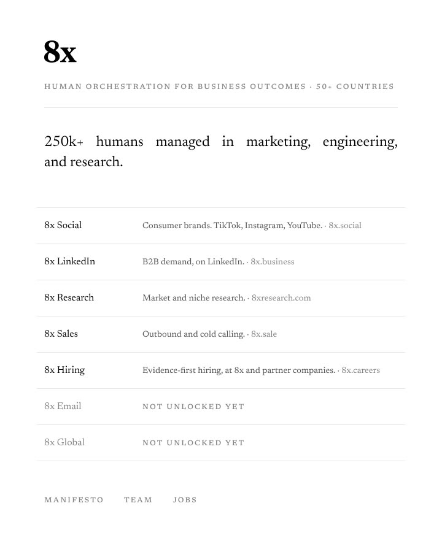
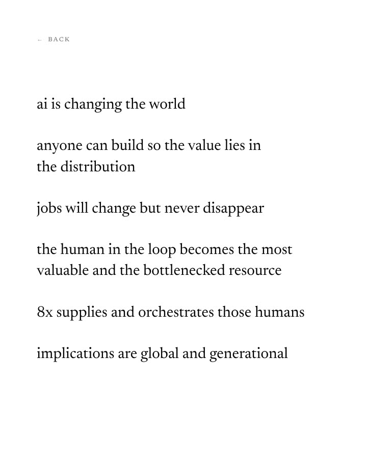
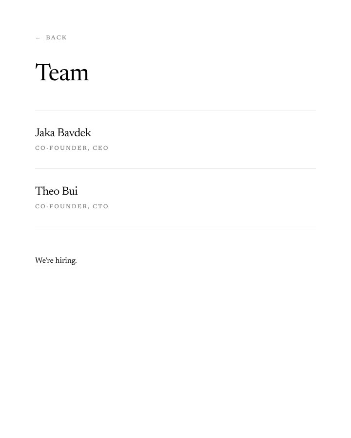
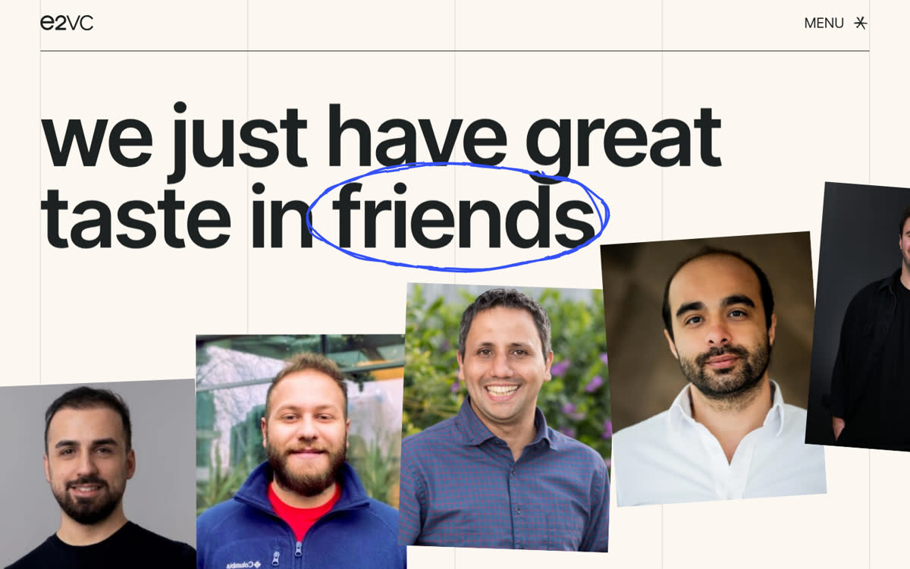
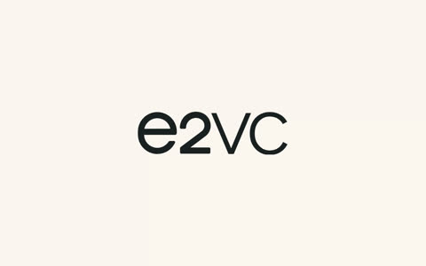
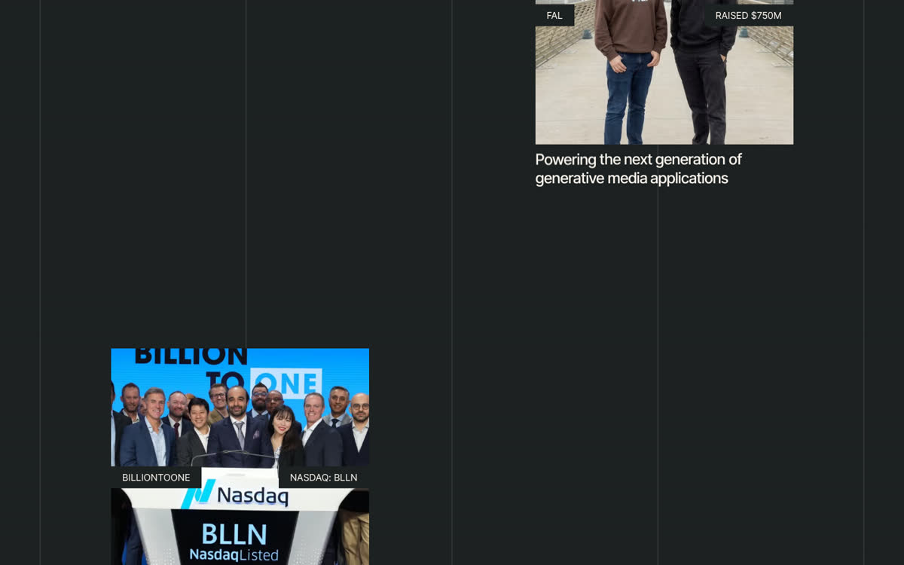
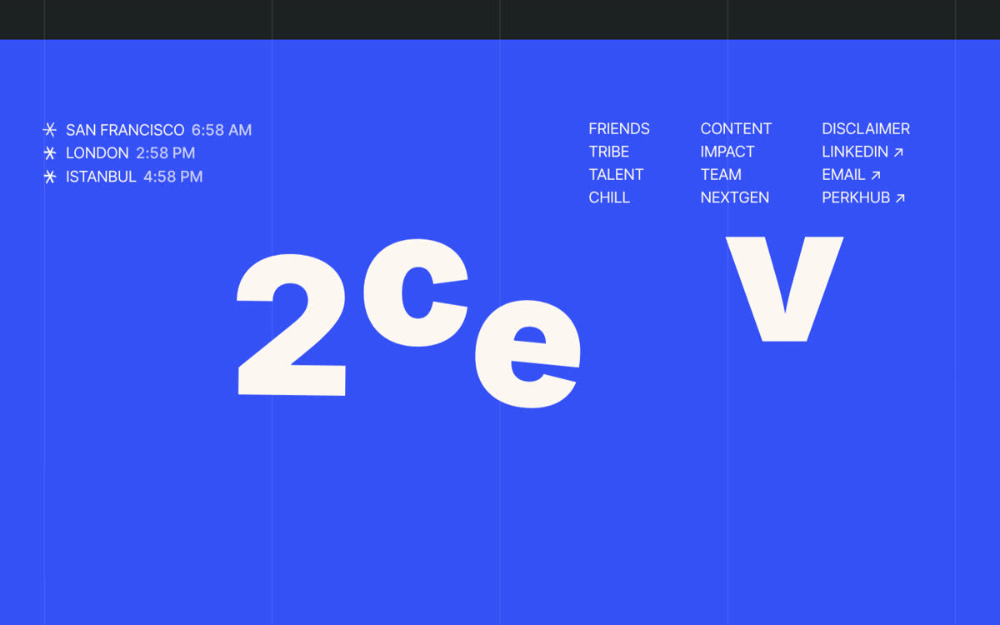

<title>8x.life Redesign Groundwork</title>
<link rel="preconnect" href="https://fonts.googleapis.com">
<link rel="preconnect" href="https://fonts.gstatic.com" crossorigin>
<link rel="stylesheet" href="https://fonts.googleapis.com/css2?family=Geist+Mono:wght@400;500;600&family=Newsreader:opsz,wght@6..72,300..800&display=swap">
<style>
/* Layout concept: a document under review. Claims run in the main column; their receipts sit in a ruled margin, the way a reader marks up a piece of work. */
:root {
  /* colour: paper, ink, the editor's pen, a highlighter */
  --paper: #FBFBF8;
  --paper-2: #F2F2EC;
  --ink: #141412;
  --ink-2: #5F5F58;
  --rule: #E2E2DA;
  --pen: #C73D20;
  --mark: #E8EF9A;
  --mark-ink: #141412;

  /* type: serif for what we say, mono for what proves it */
  --serif: "Newsreader", "Iowan Old Style", "Palatino Linotype", Georgia, serif;
  --mono: "Geist Mono", ui-monospace, "SF Mono", Menlo, Consolas, monospace;

  --t-claim: clamp(2.6rem, 1.4rem + 5.4vw, 7rem);
  --t-h2: clamp(2rem, 1.3rem + 2.9vw, 4rem);
  --t-h3: clamp(1.4rem, 1.15rem + 1.1vw, 2.1rem);
  --t-lead: clamp(1.2rem, 1.08rem + .55vw, 1.55rem);
  --t-body: 1.125rem;
  --t-receipt: .875rem;
  --t-label: .75rem;

  /* spacing, 4pt */
  --s1: 4px; --s2: 8px; --s3: 12px; --s4: 16px; --s5: 24px; --s6: 32px; --s7: 48px; --s8: 64px; --s9: 96px; --s10: 144px;

  /* motion */
  --ease-pen: cubic-bezier(.65, 0, .35, 1);
  --ease-settle: cubic-bezier(.2, .8, .2, 1);
  --d-tap: 160ms;
  --d-mark: 420ms;
  --d-settle: 700ms;
  --stagger: 70ms;

  --measure: 65ch;
  --gutter: max(16px, 4vw);
}
@media (prefers-color-scheme: dark) {
  :root:not([data-theme="light"]) {
    --paper: #121311; --paper-2: #1A1B18; --ink: #EDEDE7; --ink-2: #A3A39B; --rule: #2C2D29;
    --pen: #F0603F; --mark: #3B4113; --mark-ink: #EDEDE7; color-scheme: dark;
  }
}
:root[data-theme="dark"] {
  --paper: #121311; --paper-2: #1A1B18; --ink: #EDEDE7; --ink-2: #A3A39B; --rule: #2C2D29;
  --pen: #F0603F; --mark: #3B4113; --mark-ink: #EDEDE7; color-scheme: dark;
}

* { box-sizing: border-box; }
em, i, cite, q { font-style: normal; }
body {
  background: var(--paper);
  color: var(--ink);
  font-family: var(--serif);
  font-size: var(--t-body);
  line-height: 1.55;
  font-optical-sizing: auto;
  -webkit-font-smoothing: antialiased;
  text-rendering: optimizeLegibility;
}
::selection { background: var(--mark); color: var(--mark-ink); }
a { color: inherit; text-decoration-thickness: 1px; text-underline-offset: .18em; }
a:hover { text-decoration-color: var(--pen); }
:focus-visible { outline: 2px solid var(--pen); outline-offset: 3px; border-radius: 1px; }
h1, h2, h3, h4 { font-weight: 400; text-wrap: balance; margin: 0; }
p { margin: 0; text-wrap: pretty; }
img { max-width: 100%; height: auto; display: block; }

.page { padding-inline: var(--gutter); max-width: 1320px; margin-inline: auto; }

/* ---------- top bar ---------- */
.bar {
  position: sticky; top: env(safe-area-inset-top, 0px); z-index: 10;
  background: color-mix(in srgb, var(--paper) 92%, transparent);
  backdrop-filter: blur(8px);
  border-bottom: 1px solid var(--rule);
}
.bar__in { display: flex; align-items: center; gap: var(--s5); padding-block: var(--s3); flex-wrap: wrap; }
.wordmark { font-family: var(--serif); font-weight: 700; font-size: 1.6rem; line-height: 1; letter-spacing: -.02em; text-decoration: none; }
.bar__meta { font-family: var(--mono); font-size: var(--t-label); letter-spacing: .06em; text-transform: uppercase; color: var(--ink-2); }
.bar nav { margin-left: auto; display: flex; gap: var(--s4); flex-wrap: wrap; }
.bar nav a { font-family: var(--mono); font-size: var(--t-label); letter-spacing: .06em; text-transform: uppercase; text-decoration: none; color: var(--ink-2); }
.bar nav a:hover { color: var(--ink); }
@media (max-width: 720px) { .bar nav { display: none; } }

/* ---------- labels, chips ---------- */
.label { font-family: var(--mono); font-size: var(--t-label); letter-spacing: .08em; text-transform: uppercase; color: var(--ink-2); }
.label b { color: var(--pen); font-weight: 500; }
.chip {
  display: inline-flex; align-items: center; gap: 6px;
  font-family: var(--mono); font-size: 11px; letter-spacing: .08em; text-transform: uppercase;
  border: 1px solid var(--rule); padding: 3px 7px 2px; border-radius: 2px; color: var(--ink-2); white-space: nowrap;
}
.chip--pen { color: var(--pen); border-color: color-mix(in srgb, var(--pen) 40%, var(--rule)); }
.chip--ink { color: var(--paper); background: var(--ink); border-color: var(--ink); }
.chips { display: flex; flex-wrap: wrap; gap: 6px; }

/* ---------- document grid: main + margin ---------- */
.doc { display: grid; grid-template-columns: minmax(0, 1fr); gap: var(--s5); }
.doc > * { min-width: 0; }
.margin { font-family: var(--mono); font-size: var(--t-receipt); line-height: 1.5; color: var(--ink-2); display: grid; gap: var(--s5); align-content: start; }
@media (min-width: 1000px) {
  .doc { grid-template-columns: minmax(0, 8fr) minmax(0, 4fr); gap: var(--s8); }
  .margin { border-left: 1px solid var(--rule); padding-left: var(--s6); }
}

/* ---------- sections ---------- */
section.sec { padding-block: var(--s9) var(--s8); border-top: 1px solid var(--rule); scroll-margin-top: 64px; }
.sec__head { display: grid; gap: var(--s4); margin-bottom: var(--s8); max-width: 60rem; }
.sec__head h2 { font-size: var(--t-h2); line-height: 1.02; letter-spacing: -.02em; }
.sec__head p { font-size: var(--t-lead); line-height: 1.4; color: var(--ink-2); max-width: var(--measure); }
.sub { display: grid; gap: var(--s5); margin-top: var(--s9); }
.sub:first-of-type { margin-top: 0; }
.sub > h3 { font-size: var(--t-h3); line-height: 1.12; letter-spacing: -.01em; max-width: 40rem; }
.prose { display: grid; gap: var(--s4); max-width: var(--measure); }
.prose p { color: var(--ink); }
.muted { color: var(--ink-2); }

/* ---------- hero ---------- */
.hero { padding-block: var(--s9) var(--s9); display: grid; gap: var(--s7); }
.hero .claim { font-size: var(--t-claim); line-height: .95; letter-spacing: -.03em; font-weight: 380; }
.hero__lead { font-size: var(--t-lead); line-height: 1.4; max-width: 38rem; }

/* ---------- redline (signature) ---------- */
.redline { display: grid; gap: .08em; }
.redline del {
  position: relative; text-decoration: none; color: var(--ink-2); justify-self: start;
  transition: color var(--d-mark) var(--ease-pen);
}
.redline del::after {
  content: ""; position: absolute; left: -.04em; right: -.04em; top: 54%;
  height: max(2px, .055em); background: var(--pen);
  transform-origin: left center; transform: scaleX(1);
  transition: transform var(--d-mark) var(--ease-pen);
}
.redline ins { text-decoration: none; position: relative; display: block; transition: opacity var(--d-settle) var(--ease-settle), transform var(--d-settle) var(--ease-settle); }
.redline ins::before {
  content: "‸"; position: absolute; left: -.55em; top: -.15em; color: var(--pen); font-size: .6em; font-family: var(--serif);
}
.redline.is-armed del { color: var(--ink); }
.redline.is-armed del::after { transform: scaleX(0); }
.redline.is-armed ins { opacity: .12; transform: translateY(.18em); }
.redline.is-playing ins { transition-delay: calc(var(--d-mark) - 60ms); }
.redline--inline { display: inline; }
.redline--inline del, .redline--inline ins { display: inline; }
.redline--inline ins::before { display: none; }
.redline--inline ins { margin-left: .25em; }

/* ---------- receipts ---------- */
.ref { font-family: var(--mono); font-size: .42em; vertical-align: super; color: var(--pen); margin-left: .12em; letter-spacing: 0; text-decoration: none; font-weight: 500; }
.receipt { display: grid; gap: var(--s2); padding: var(--s3) 0; border-top: 1px solid var(--rule); transition: background var(--d-tap) ease; }
.receipt:first-child { border-top: 0; padding-top: 0; }
.receipt__src { font-size: 11px; letter-spacing: .08em; text-transform: uppercase; color: var(--ink-2); display: flex; gap: var(--s2); align-items: baseline; }
.receipt__src b { color: var(--pen); font-weight: 500; }
.receipt q { quotes: "“" "”" "‘" "’"; color: var(--ink); }
mark { background: var(--mark); color: var(--mark-ink); padding: 0 .12em; border-radius: 1px; box-decoration-break: clone; -webkit-box-decoration-break: clone; }
.receipt.is-lit { background: color-mix(in srgb, var(--mark) 45%, transparent); }

/* claims list (beliefs) */
.claims { display: grid; gap: 0; }
.claimrow { display: grid; grid-template-columns: minmax(0, 1fr); gap: var(--s4); padding-block: var(--s6); border-top: 1px solid var(--rule); }
.claimrow:last-child { border-bottom: 1px solid var(--rule); }
.claimrow h4 { font-size: clamp(1.35rem, 1.1rem + 1.2vw, 2.2rem); line-height: 1.12; letter-spacing: -.012em; }
.claimrow .num { font-family: var(--mono); font-size: var(--t-label); color: var(--ink-2); letter-spacing: .08em; }
.claimrow .margin { border-left: 0; padding-left: 0; }
@media (min-width: 1000px) {
  .claimrow { grid-template-columns: 4rem minmax(0, 7fr) minmax(0, 4fr); gap: var(--s6); align-items: start; }
  .claimrow .margin { border-left: 1px solid var(--rule); padding-left: var(--s5); }
}

/* ---------- tables ---------- */
.tablewrap { overflow-x: auto; border-top: 1px solid var(--ink); }
table { width: 100%; border-collapse: collapse; font-size: 1rem; }
th { text-align: left; font-family: var(--mono); font-size: 11px; letter-spacing: .08em; text-transform: uppercase; color: var(--ink-2); font-weight: 500; padding: var(--s3) var(--s4) var(--s3) 0; border-bottom: 1px solid var(--rule); vertical-align: bottom; }
td { padding: var(--s4) var(--s4) var(--s4) 0; border-bottom: 1px solid var(--rule); vertical-align: top; line-height: 1.45; }
td.mono, .mono { font-family: var(--mono); font-size: var(--t-receipt); }
td .tag { white-space: nowrap; }
.num-cell { font-variant-numeric: tabular-nums; font-family: var(--mono); font-size: var(--t-receipt); white-space: nowrap; }
.t-min { min-width: 560px; }
tr.bad td { color: var(--ink); }
tr.bad td:first-child::before { content: "✕ "; color: var(--pen); font-family: var(--mono); }
tr.good td:first-child::before { content: "✓ "; color: var(--ink-2); font-family: var(--mono); }

/* ---------- figures ---------- */
.figs { display: grid; gap: var(--s5); grid-template-columns: repeat(auto-fit, minmax(min(100%, 220px), 1fr)); }
.figs--wide { grid-template-columns: repeat(auto-fit, minmax(min(100%, 420px), 1fr)); }
figure { margin: 0; display: grid; gap: var(--s3); align-content: start; }
figure .shot { border: 1px solid var(--rule); background: #fff; overflow: hidden; }
figure .shot img { width: 100%; }
figcaption { font-family: var(--mono); font-size: 12px; line-height: 1.5; color: var(--ink-2); }
figcaption b { color: var(--ink); font-weight: 500; }

/* ---------- stat line ---------- */
.stats { display: grid; grid-template-columns: repeat(auto-fit, minmax(min(100%, 180px), 1fr)); border-top: 1px solid var(--ink); }
.stat { padding: var(--s5) var(--s4) var(--s5) 0; border-bottom: 1px solid var(--rule); display: grid; gap: var(--s2); align-content: start; }
.stat strong { font-family: var(--serif); font-weight: 400; font-size: clamp(2.4rem, 2rem + 2vw, 3.6rem); line-height: 1; letter-spacing: -.02em; font-variant-numeric: tabular-nums lining-nums; }
.stat span { font-family: var(--mono); font-size: 12px; line-height: 1.45; color: var(--ink-2); }

/* ---------- reader cards ---------- */
.readers { display: grid; gap: var(--s5); grid-template-columns: repeat(auto-fit, minmax(min(100%, 260px), 1fr)); }
.reader { display: grid; gap: var(--s3); align-content: start; padding-top: var(--s4); border-top: 2px solid var(--ink); }
.reader p { font-size: 1.12rem; line-height: 1.45; }

/* two-column compare */
.twocol { display: grid; gap: var(--s6); grid-template-columns: repeat(auto-fit, minmax(min(100%, 320px), 1fr)); }
.listcol { display: grid; gap: var(--s3); align-content: start; }
.listcol h4 { font-family: var(--mono); font-size: var(--t-label); letter-spacing: .08em; text-transform: uppercase; color: var(--ink-2); font-weight: 500; padding-bottom: var(--s2); border-bottom: 1px solid var(--ink); }
.listcol ul { list-style: none; margin: 0; padding: 0; display: grid; gap: 0; }
.listcol li { padding-block: var(--s3); border-bottom: 1px solid var(--rule); line-height: 1.45; }
.listcol li b { font-weight: 600; }

/* ---------- concept cards ---------- */
.concepts { display: grid; gap: 0; border-top: 1px solid var(--ink); }
.concept { display: grid; gap: var(--s3); padding-block: var(--s6); border-bottom: 1px solid var(--rule); grid-template-columns: minmax(0, 1fr); }
.concept__id { font-family: var(--mono); font-size: var(--t-label); color: var(--pen); letter-spacing: .08em; }
.concept h4 { font-size: clamp(1.3rem, 1.1rem + .9vw, 1.9rem); line-height: 1.15; letter-spacing: -.01em; }
.concept p { max-width: var(--measure); }
.concept .ex { font-family: var(--mono); font-size: var(--t-receipt); color: var(--ink-2); line-height: 1.55; }
@media (min-width: 1000px) {
  .concept { grid-template-columns: 3rem minmax(0, 7fr) minmax(0, 4fr); gap: var(--s6); align-items: start; }
  .concept__meta { border-left: 1px solid var(--rule); padding-left: var(--s5); }
}
.concept__meta { display: grid; gap: var(--s3); align-content: start; font-family: var(--mono); font-size: 12px; color: var(--ink-2); line-height: 1.5; }
.concept.is-rec h4::after { content: "Recommended"; font-family: var(--mono); font-size: 10px; letter-spacing: .1em; text-transform: uppercase; color: var(--pen); margin-left: .8em; vertical-align: .35em; white-space: nowrap; }

/* ---------- design system ---------- */
.spec { display: grid; gap: var(--s6); }
.specimen { display: grid; gap: var(--s5); padding-block: var(--s6); border-top: 1px solid var(--rule); }
.specimen__row { display: grid; gap: var(--s3) var(--s6); grid-template-columns: minmax(0, 1fr); align-items: baseline; }
@media (min-width: 900px) { .specimen__row { grid-template-columns: 12rem minmax(0, 1fr); } }
.specimen__row .label { line-height: 1.5; }
.s-claim { font-size: var(--t-claim); line-height: .95; letter-spacing: -.03em; font-weight: 380; }
.s-h2 { font-size: var(--t-h2); line-height: 1.02; letter-spacing: -.02em; }
.s-h3 { font-size: var(--t-h3); line-height: 1.12; letter-spacing: -.01em; }
.s-lead { font-size: var(--t-lead); line-height: 1.4; }
.s-body { font-size: var(--t-body); line-height: 1.55; max-width: var(--measure); }
.s-receipt { font-family: var(--mono); font-size: var(--t-receipt); line-height: 1.5; }
.s-label { font-family: var(--mono); font-size: var(--t-label); letter-spacing: .08em; text-transform: uppercase; }
.fam { display: grid; gap: var(--s5); grid-template-columns: repeat(auto-fit, minmax(min(100%, 320px), 1fr)); }
.fam__card { display: grid; gap: var(--s3); align-content: start; padding-top: var(--s4); border-top: 2px solid var(--ink); }
.fam__glyph { font-size: clamp(4rem, 3rem + 4vw, 7rem); line-height: 1; letter-spacing: -.03em; }
.fam__glyph--mono { font-family: var(--mono); letter-spacing: -.04em; font-weight: 500; }

.swatches { display: grid; gap: var(--s4); grid-template-columns: repeat(auto-fit, minmax(min(100%, 150px), 1fr)); }
.sw { display: grid; gap: var(--s2); align-content: start; }
.sw__chip { height: 96px; border: 1px solid var(--rule); border-radius: 2px; position: relative; }
.sw__chip span { position: absolute; left: 10px; bottom: 8px; font-family: var(--mono); font-size: 12px; }
.sw b { font-family: var(--mono); font-size: 12px; font-weight: 500; letter-spacing: .04em; }
.sw p { font-family: var(--mono); font-size: 12px; line-height: 1.5; color: var(--ink-2); }

.tokens { display: grid; gap: 0; border-top: 1px solid var(--ink); }
.tok { display: grid; grid-template-columns: minmax(7rem, 11rem) minmax(0, 1fr); gap: var(--s4); padding-block: var(--s3); border-bottom: 1px solid var(--rule); align-items: center; font-family: var(--mono); font-size: 13px; }
.tok code { color: var(--ink); }
.tok .bar-viz { height: 10px; background: var(--ink); border-radius: 1px; }
.tok small { color: var(--ink-2); font-size: 12px; }

.demo { border: 1px solid var(--rule); background: var(--paper-2); padding: clamp(16px, 3vw, 40px); display: grid; gap: var(--s5); border-radius: 2px; }
.demo__head { display: flex; justify-content: space-between; align-items: baseline; gap: var(--s4); flex-wrap: wrap; }
.demo .claim-sm { font-size: clamp(1.8rem, 1.2rem + 2.6vw, 3.4rem); line-height: 1; letter-spacing: -.02em; font-weight: 400; }

.btn {
  display: inline-flex; align-items: center; gap: 10px;
  font-family: var(--mono); font-size: 13px; letter-spacing: .06em; text-transform: uppercase; font-weight: 500;
  padding: 12px 16px 11px; border-radius: 2px; border: 1px solid var(--ink);
  background: var(--ink); color: var(--paper); cursor: pointer; text-decoration: none;
  transition: background var(--d-tap) ease, color var(--d-tap) ease, transform var(--d-tap) var(--ease-settle);
}
.btn:hover { background: transparent; color: var(--ink); }
.btn:active { transform: translateY(1px); }
.btn--ghost { background: transparent; color: var(--ink); }
.btn--ghost:hover { background: var(--ink); color: var(--paper); }
.btn .arr { color: var(--pen); }
.btn:hover .arr { color: var(--pen); }
.textlink { font-family: var(--mono); font-size: 13px; letter-spacing: .04em; text-transform: uppercase; text-decoration: none; border-bottom: 1px solid var(--ink); padding-bottom: 2px; }
.textlink:hover { border-color: var(--pen); }
.row { display: flex; flex-wrap: wrap; gap: var(--s4); align-items: center; }

/* fit check */
.fit { display: grid; gap: var(--s4); }
.pair { border: 0; margin: 0; padding: 0; display: grid; gap: var(--s2); }
.pair legend { font-family: var(--mono); font-size: 11px; letter-spacing: .08em; text-transform: uppercase; color: var(--ink-2); margin-bottom: var(--s2); }
.pair__opts { display: grid; grid-template-columns: 1fr 1fr; border: 1px solid var(--ink); border-radius: 2px; overflow: hidden; }
.pair__opts label { position: relative; padding: var(--s4); cursor: pointer; font-size: 1.05rem; line-height: 1.35; transition: background var(--d-tap) ease, color var(--d-tap) ease; display: block; }
.pair__opts label + label { border-left: 1px solid var(--ink); }
.pair__opts input { position: absolute; opacity: 0; pointer-events: none; }
.pair__opts label:has(input:checked) { background: var(--ink); color: var(--paper); }
.pair__opts label:has(input:focus-visible) { outline: 2px solid var(--pen); outline-offset: -4px; }
@media (max-width: 520px) { .pair__opts { grid-template-columns: 1fr; } .pair__opts label + label { border-left: 0; border-top: 1px solid var(--ink); } }
.verdict { font-size: var(--t-lead); line-height: 1.35; min-height: 3.2em; }
.verdict small { display: block; font-family: var(--mono); font-size: 12px; color: var(--ink-2); margin-top: var(--s2); }

/* trial clock */
.clock { display: grid; gap: var(--s5); }
.clock__face { font-family: var(--mono); font-weight: 500; font-size: clamp(3rem, 2rem + 6vw, 6.5rem); line-height: 1; letter-spacing: -.04em; font-variant-numeric: tabular-nums; transition: color var(--d-tap) ease; }
.clock__face.is-over { color: var(--pen); }
.clock__note { font-family: var(--mono); font-size: 13px; color: var(--ink-2); min-height: 1.5em; }
.steps { list-style: none; margin: 0; padding: 0; display: grid; gap: 0; counter-reset: step; border-top: 1px solid var(--ink); }
.steps li { counter-increment: step; display: grid; grid-template-columns: 2.4rem minmax(0, 1fr); gap: var(--s3); padding-block: var(--s3); border-bottom: 1px solid var(--rule); transition: color var(--d-tap) ease; color: var(--ink-2); }
.steps li::before { content: counter(step, decimal-leading-zero); font-family: var(--mono); font-size: 12px; padding-top: .3em; }
.steps li.is-on { color: var(--ink); }
.steps li.is-on::before { color: var(--pen); }
.steps li b { font-weight: 600; }
@media (min-width: 900px) { .clock { grid-template-columns: minmax(0, 1fr) minmax(0, 1fr); align-items: start; } }

/* product rows */
.prods { border-top: 1px solid var(--ink); }
.prod { display: grid; grid-template-columns: minmax(8rem, 12rem) minmax(0, 1fr); gap: var(--s4); padding-block: var(--s4); border-bottom: 1px solid var(--rule); align-items: baseline; }
.prod__name { font-size: 1.15rem; }
.prod__what { color: var(--ink-2); font-size: 1rem; }
.prod details summary { cursor: pointer; list-style: none; font-family: var(--mono); font-size: 12px; letter-spacing: .08em; text-transform: uppercase; color: var(--ink-2); display: inline-flex; gap: 8px; align-items: center; }
.prod details summary::-webkit-details-marker { display: none; }
.prod details summary::after { content: "Who unlocks this? +"; color: var(--pen); }
.prod details[open] summary::after { content: "Who unlocks this? −"; }
.prod details p { margin-top: var(--s3); font-family: var(--serif); font-size: 1.05rem; color: var(--ink); max-width: 46ch; }
.prod.is-locked .prod__name { color: var(--ink-2); }
@media (max-width: 520px) { .prod { grid-template-columns: minmax(0, 1fr); gap: var(--s1); } }

/* who's awake */
.awake { display: grid; gap: 0; border-top: 1px solid var(--ink); }
.city { display: grid; grid-template-columns: minmax(7rem, 10rem) 4.5rem minmax(0, 1fr); gap: var(--s4); padding-block: var(--s3); border-bottom: 1px solid var(--rule); align-items: center; font-family: var(--mono); font-size: 13px; }
.city__t { font-variant-numeric: tabular-nums; }
.city__band { position: relative; height: 14px; border-radius: 1px; background: linear-gradient(90deg, var(--rule) 0 33.33%, color-mix(in srgb, var(--mark) 80%, var(--paper)) 33.33% 91.66%, var(--rule) 91.66%); }
.city__band i { position: absolute; top: -4px; bottom: -4px; width: 2px; background: var(--pen); transform: translateX(-1px); }
.city.is-asleep .city__t { color: var(--ink-2); }

/* faces */
.faces { display: grid; gap: var(--s4); grid-template-columns: repeat(auto-fit, minmax(min(100%, 200px), 1fr)); }
.face { display: grid; gap: var(--s3); align-content: start; }
.face__clip { aspect-ratio: 4 / 5; max-width: 100%; background: repeating-linear-gradient(135deg, var(--paper-2) 0 10px, var(--paper) 10px 20px); border: 1px solid var(--rule); display: grid; place-items: center; font-family: var(--mono); font-size: 12px; color: var(--ink-2); position: relative; border-radius: 2px; text-align: center; padding: var(--s3); }
.face__tag { position: absolute; left: 0; bottom: 0; background: var(--ink); color: var(--paper); font-family: var(--mono); font-size: 11px; letter-spacing: .06em; text-transform: uppercase; padding: 5px 8px 4px; }
.face p { font-family: var(--mono); font-size: 12px; line-height: 1.5; color: var(--ink-2); }
.face p b { color: var(--ink); font-weight: 500; }

/* voice */
.voice { display: grid; gap: 0; border-top: 1px solid var(--ink); }
.voice__row { display: grid; gap: var(--s2) var(--s6); padding-block: var(--s4); border-bottom: 1px solid var(--rule); grid-template-columns: minmax(0, 1fr); }
@media (min-width: 900px) { .voice__row { grid-template-columns: minmax(0, 1fr) minmax(0, 1fr); } }
.voice__row .redline { font-size: 1.25rem; line-height: 1.35; }
.voice__row p.why { font-family: var(--mono); font-size: 12px; color: var(--ink-2); line-height: 1.55; }

/* next */
.plan { list-style: none; margin: 0; padding: 0; border-top: 1px solid var(--ink); counter-reset: plan; }
.plan li { counter-increment: plan; display: grid; grid-template-columns: 3rem minmax(0, 1fr); gap: var(--s4); padding-block: var(--s5); border-bottom: 1px solid var(--rule); }
.plan li::before { content: counter(plan, decimal-leading-zero); font-family: var(--mono); font-size: 13px; color: var(--pen); padding-top: .35em; }
.plan h4 { font-size: 1.45rem; line-height: 1.2; }
.plan p { color: var(--ink-2); margin-top: var(--s2); max-width: var(--measure); }
.plan .chips { margin-top: var(--s3); }

footer.end { padding-block: var(--s8) var(--s9); border-top: 1px solid var(--ink); display: grid; gap: var(--s3); font-family: var(--mono); font-size: 12px; color: var(--ink-2); }

@media (prefers-reduced-motion: reduce) {
  *, *::before, *::after { transition-duration: 0ms !important; animation-duration: 0ms !important; }
}
</style>

<header class="bar">
  <div class="page bar__in">
    <a class="wordmark" href="#top" aria-label="8x.life redesign, top">8x</a>
    <span class="bar__meta">8x.life redesign · Phase 1: research and system</span>
    <nav aria-label="Sections">
      <a href="#audit">Audit</a>
      <a href="#e2">e2.vc</a>
      <a href="#interactions">Interactions</a>
      <a href="#system">System</a>
      <a href="#next">Next</a>
    </nav>
  </div>
</header>

<main class="page" id="top">

  <!-- ================= HERO ================= -->
  <div class="hero">
    <p class="label">Groundwork for the 8x.life redesign · read on 6 Oct 2026 · desktop and phone</p>
    <div class="doc">
      <h1 class="claim redline" data-redline>
        <del>We’re hiring.</del>
        <ins>Show us your work. Here’s&nbsp;ours.</ins>
      </h1>
      <aside class="margin" aria-label="Receipts for the opening claim">
        <div class="receipt">
          <div class="receipt__src"><b>R1</b> 8x.careers, how hiring works</div>
          <q>You apply, a practical assignment arrives the moment you submit, and <mark>a person reads what you send back.</mark></q>
        </div>
        <div class="receipt">
          <div class="receipt__src"><b>R2</b> 8x.life, all three pages</div>
          <span>129 words in total. 0 about what working here is like. 0 faces.</span>
        </div>
      </aside>
    </div>
    <p class="hero__lead">8x hires on evidence: no CVs, a real assignment, a two-week trial. Its life-at site gives candidates 129 words and two names in return. This page holds the research and the design system for fixing that. No section has been designed yet.</p>
    <div class="row">
      <a class="btn" href="#audit">Read the audit <span class="arr" aria-hidden="true">→</span></a>
      <a class="textlink" href="#system">Jump to the system</a>
    </div>
  </div>

  <!-- ================= 01 AUDIT ================= -->
  <section class="sec" id="audit" aria-labelledby="audit-h">
    <div class="sec__head">
      <p class="label"><b>01</b> · Audit</p>
      <h2 id="audit-h">What 8x.life says today, and what a candidate takes away</h2>
      <p>The brief: make the right people want to work here, and give the wrong people a reason to opt out. The current site does neither, because it was written for buyers.</p>
    </div>

    <div class="sub">
      <div class="figs">
        <figure>
          <div class="shot"></div>
          <figcaption><b>/</b> · 68 words. A directory of product lines. Two rows say "not unlocked yet".</figcaption>
        </figure>
        <figure>
          <div class="shot"></div>
          <figcaption><b>/manifesto</b> · 49 words. Six lines, all lowercase, no stance a reader could disagree with.</figcaption>
        </figure>
        <figure>
          <div class="shot"></div>
          <figcaption><b>/team</b> · 12 words. Two names, no faces, then "We’re hiring."</figcaption>
        </figure>
      </div>
      <div class="stats" role="list">
        <div class="stat" role="listitem"><strong>129</strong><span>words across the whole site, nav labels included</span></div>
        <div class="stat" role="listitem"><strong>0</strong><span>sentences about what working at 8x is like</span></div>
        <div class="stat" role="listitem"><strong>0</strong><span>faces on "the human company"</span></div>
        <div class="stat" role="listitem"><strong>11</strong><span>team video clips that already exist on 8x.careers</span></div>
      </div>
    </div>

    <div class="sub">
      <h3>Three people read it for 30 seconds</h3>
      <div class="readers">
        <div class="reader">
          <span class="label">The candidate 8x wants</span>
          <p>“Some kind of agency with lots of sub-brands. Manages a huge number of freelancers. Looks like two people. Something about AI. I don’t know what I’d do there, or with whom.”</p>
        </div>
        <div class="reader">
          <span class="label">The candidate who would struggle</span>
          <p>Reaches the same conclusion, so has no reason to opt out. Nothing on the page is something a person could disagree with.</p>
        </div>
        <div class="reader">
          <span class="label">A client</span>
          <p>Gets the most from it: products, scale, domains. The page speaks to buyers, and colleagues are an afterthought.</p>
        </div>
      </div>
      <div class="demo" style="margin-top: var(--s5)">
        <span class="label">What it says, and what it should say</span>
        <p class="claim-sm redline" data-redline><del>8x sells human labour at scale.</del><ins>At 8x you own something real in week one, and you’re judged on the work.</ins></p>
      </div>
    </div>

    <div class="sub">
      <h3>Buried: everything that would make the right person lean in already exists, on another site</h3>
      <div class="tablewrap">
        <table class="t-min">
          <thead><tr><th scope="col">Fact</th><th scope="col">Where it lives now</th><th scope="col">Why it matters</th></tr></thead>
          <tbody>
            <tr><td><b>Interns lead whole market launches.</b> Poland, Japan, Germany, UK, Spain, SE Asia, Portugal and Brazil, Turkey.</td><td class="mono">9 listings on 8x.careers</td><td>The most striking fact about life at 8x. A student gets a country.</td></tr>
            <tr><td><b>Two-week trial.</b> “Internship (2 week trial)”.</td><td class="mono">Listing small print</td><td>The honest, high-stakes part. It filters better than any copy could.</td></tr>
            <tr><td><b>No CVs.</b> “Show us you are hungry and can execute.”</td><td class="mono">Requirements field</td><td>A value, filed as a requirement.</td></tr>
            <tr><td><b>Assignment on submit.</b> “The timer is tracked and never enforced.”</td><td class="mono">8x.careers home</td><td>Evidence-first hiring, made concrete.</td></tr>
            <tr><td><b>Small budgets on purpose.</b> “Hands in the account, not managing an agency.”</td><td class="mono">Paid Ads Manager listing</td><td>The operating philosophy in one line.</td></tr>
            <tr><td><b>Ownership.</b> “Own a full product end to end.” “The taste and the output are yours.”</td><td class="mono">Engineer, Designer listings</td><td>This is the culture. It never reaches 8x.life.</td></tr>
            <tr><td><b>8x Karma, idea to launch in 17 days.</b></td><td class="mono">A LinkedIn post</td><td>The best evidence of pace, and missing from the product list.</td></tr>
            <tr><td><b>Eleven people on video, in their own words.</b></td><td class="mono">8x.careers</td><td>The life site shows two names and no faces.</td></tr>
          </tbody>
        </table>
      </div>
    </div>

    <div class="sub">
      <h3>The headline number fails 8x’s own standard</h3>
      <div class="twocol">
        <div class="prose">
          <p>The biggest claim on the homepage is “250k+ humans managed · 50+ countries”. The founders’ own sites give different numbers. For a company that asks every candidate for evidence, leading with a figure its founders don’t repeat is a real risk with exactly the sharp people it wants.</p>
          <p class="muted">Recommendation: one dated, defined figure, such as “121,000 people on the platform, June 2026”, with a line on what counts.</p>
        </div>
        <div class="tablewrap">
          <table>
            <thead><tr><th scope="col">Source</th><th scope="col">People</th><th scope="col">Countries</th></tr></thead>
            <tbody>
              <tr class="bad"><td>8x.life homepage</td><td class="num-cell">250k+ “managed”</td><td class="num-cell">50+</td></tr>
              <tr><td>CEO’s site</td><td class="num-cell">120,000+</td><td class="num-cell">30+</td></tr>
              <tr><td>CEO’s post, June 2026</td><td class="num-cell">121,000 on platform</td><td class="num-cell">–</td></tr>
              <tr><td>CTO’s site</td><td class="num-cell">50K+</td><td class="num-cell">30+</td></tr>
              <tr><td>8x.careers, LinkedIn</td><td class="num-cell">–</td><td class="num-cell">“10 markets”</td></tr>
            </tbody>
          </table>
        </div>
      </div>
    </div>

    <div class="sub">
      <h3>Vague, generic, contradictory, missing</h3>
      <div class="twocol">
        <div class="listcol">
          <h4>Vague or generic</h4>
          <ul>
            <li><b>“Human orchestration for business outcomes.”</b> Category jargon. What does someone do on Monday?</li>
            <li><b>“250k+ humans managed.”</b> Makes people sound like stock, and leaves open the first question: am I joining the core team, or the network it runs?</li>
            <li><b>“ai is changing the world.”</b> True of every company in 2026. The manifesto never turns belief into “so here is what we ask of you”.</li>
            <li><b>“We’re hiring.”</b> The entire call to action.</li>
          </ul>
        </div>
        <div class="listcol">
          <h4>Missing before anyone applies</h4>
          <ul>
            <li>What I would own in week one and month one</li>
            <li>How the work is judged, and by whom</li>
            <li>Pace, hours, remote and time-zone norms</li>
            <li>Who I would work with, with faces</li>
            <li>Who thrives and who doesn’t, said plainly</li>
            <li>The path in: assignment, trial, decision, timings</li>
            <li>Pay. 8x asks for your last salary but rarely publishes a range. <span class="muted">8x to decide: publish, or explain why.</span></li>
          </ul>
        </div>
      </div>
    </div>

    <div class="sub">
      <h3>What a strong candidate should believe after 60 seconds, each with its receipt</h3>
      <div class="claims" data-claims>
        <div class="claimrow">
          <span class="num">B1</span>
          <h4 data-ref="b1">You’ll own something real from week one.<a class="ref" href="#r-b1">1</a></h4>
          <div class="margin"><div class="receipt" id="r-b1"><div class="receipt__src"><b>1</b> Market Lead Intern, Japan</div><q>Lead 8x’s launch in the Japanese market: <mark>write the go-to-market playbook</mark>, build your own outreach, close the first Japanese clients.</q></div></div>
        </div>
        <div class="claimrow">
          <span class="num">B2</span>
          <h4 data-ref="b2">You’re judged on the work, not your CV. So is 8x.<a class="ref" href="#r-b2">2</a></h4>
          <div class="margin"><div class="receipt" id="r-b2"><div class="receipt__src"><b>2</b> 8x LinkedIn, CTO</div><q>An engineer hired <mark>without a single interview</mark>, on hackathon wins. “no interview needed when you can ship fast.”</q></div></div>
        </div>
        <div class="claimrow">
          <span class="num">B3</span>
          <h4 data-ref="b3">Lean and fast on purpose. Hands on, no layers.<a class="ref" href="#r-b3">3</a></h4>
          <div class="margin"><div class="receipt" id="r-b3"><div class="receipt__src"><b>3</b> Paid Ads Manager listing · 8x Karma</div><q><mark>Small budgets on purpose</mark>: the job is finding what works before anyone spends real money.</q><span>8x Karma: idea to launch in 17 days.</span></div></div>
        </div>
        <div class="claimrow">
          <span class="num">B4</span>
          <h4 data-ref="b4">Building got cheap. Judgement didn’t. At 8x your judgement is the product.<a class="ref" href="#r-b4">4</a></h4>
          <div class="margin"><div class="receipt" id="r-b4"><div class="receipt__src"><b>4</b> 8x.life manifesto, finished</div><q>the human in the loop becomes <mark>the most valuable and the bottlenecked resource</mark></q></div></div>
        </div>
        <div class="claimrow">
          <span class="num">B5</span>
          <h4 data-ref="b5">It isn’t for everyone, and that’s deliberate.<a class="ref" href="#r-b5">5</a></h4>
          <div class="margin"><div class="receipt" id="r-b5"><div class="receipt__src"><b>5</b> CEO, on San Francisco</div><q>We’re in the office <mark>practically 24/7</mark>.</q><span class="muted">8x to confirm before this is used.</span></div></div>
        </div>
      </div>
    </div>

    <div class="sub">
      <h3>Who should opt in, and who should opt out</h3>
      <p class="muted" style="max-width: var(--measure)">Inferred from listings, the hiring process and the founders’ own writing. Every “out” line needs 8x’s sign-off before it ships.</p>
      <div class="tablewrap">
        <table class="t-min">
          <thead><tr><th scope="col">Opt in if you…</th><th scope="col">Opt out if you…</th></tr></thead>
          <tbody>
            <tr><td>would rather show your work than describe it</td><td>want your CV or pedigree to do the talking</td></tr>
            <tr><td>want a whole problem: a country, a channel, a product</td><td>want a well-defined slice of someone else’s problem</td></tr>
            <tr><td>like finding what works on a small budget</td><td>need a big budget or a team under you</td></tr>
            <tr><td>are fine being judged on output in a two-week trial</td><td>want a guaranteed role before proving anything</td></tr>
            <tr><td>work well remote and async across time zones</td><td>need an office and a manager checking in daily</td></tr>
            <tr><td>want in early at a one-year-old seed-stage company</td><td>want late-stage stability and a benefits package</td></tr>
            <tr><td>are fine with the founders’ pace</td><td>want hours you can predict</td></tr>
          </tbody>
        </table>
      </div>
    </div>
  </section>

  <!-- ================= 02 E2 ================= -->
  <section class="sec" id="e2" aria-labelledby="e2-h">
    <div class="sec__head">
      <p class="label"><b>02</b> · Reference</p>
      <h2 id="e2-h">e2.vc: what its style is doing</h2>
      <p>e2’s claim is that a fund is really a group of friends. Every part of the style is evidence for that claim: casual, hand-made, a bit messy, full of faces, with a strict grid underneath.</p>
    </div>

    <div class="sub">
      <div class="figs figs--wide">
        <figure>
          <div class="shot"></div>
          <figcaption><b>Hero.</b> One word circled by hand. Faces, not logos.</figcaption>
        </figure>
        <figure>
          <div class="shot"></div>
          <figcaption><b>Loader.</b> Founder photos flash inside the wordmark. About 3 to 4 seconds before you can read anything.</figcaption>
        </figure>
        <figure>
          <div class="shot"></div>
          <figcaption><b>Receipts on faces.</b> Every photo carries a company name and a result.</figcaption>
        </figure>
        <figure>
          <div class="shot"></div>
          <figcaption><b>Footer.</b> Physics letters, Space to jump, R to reset. Pure personality. On a phone they land on the links.</figcaption>
        </figure>
      </div>
    </div>

    <div class="sub">
      <h3>Nine mechanisms, named</h3>
      <div class="tablewrap">
        <table class="t-min">
          <thead><tr><th scope="col">Mechanism</th><th scope="col">How it’s built</th><th scope="col">What it says</th></tr></thead>
          <tbody>
            <tr><td><b>Voice sets the register</b></td><td>All lowercase, conversational: “and arin smiling 32-teeth”, “occasional baklava”</td><td>Friends, not an institution</td></tr>
            <tr><td><b>Hand-drawn marks on machine type</b></td><td>Rough.js circles, underlines, brackets, redrawn about 4 times a second</td><td>A person circled the one word that matters</td></tr>
            <tr><td><b>Faces before logos</b></td><td>Founder photos in the loader, the hero, the portfolio; cursor shows name and company</td><td>The portfolio is people</td></tr>
            <tr><td><b>Mess settles into order</b></td><td>Tilted photos; scattered letters that line up; a “Tidy up” button</td><td>Relaxed on top, organised underneath</td></tr>
            <tr><td><b>A visible grid</b></td><td>Four hairline columns through every section, rippling near the cursor</td><td>Rigour under the play</td></tr>
            <tr><td><b>Play that rewards attention</b></td><td>Physics footer, screensaver after 5 s idle, hover clocks, colour-cycling selection</td><td>We care about details nobody asked for</td></tr>
            <tr><td><b>One loud accent</b></td><td>Cream, ink, one blue; seven brights only in the footer</td><td>Restraint makes colour an event</td></tr>
            <tr><td><b>Scroll sets the pace</b></td><td>Shutter wipes, pinned text, word-by-word reveals</td><td>One idea per screen</td></tr>
            <tr><td><b>Receipts pinned to faces</b></td><td>“RAISED $750M”, “EXIT $1.2B”, “NASDAQ: BLLN”</td><td>Proof, short and attached to a person</td></tr>
          </tbody>
        </table>
      </div>
      <p class="mono muted" style="max-width: var(--measure)">Built on Webflow with GSAP and 7 plugins, Locomotive Scroll, Matter.js, Rough.js and jQuery. 330 KB of HTML, 194 KB of it inline script. Most components are credited in the source to Osmo Supply snippets. Reduced motion is respected.</p>
    </div>

    <div class="sub">
      <h3>What we take, and what we leave behind on purpose</h3>
      <div class="twocol">
        <div class="listcol">
          <h4>Take the principle</h4>
          <ul>
            <li><b>The style has to prove the positioning.</b> e2’s motion proves “friends”. Ours has to prove “evidence”.</li>
            <li><b>Faces before logos.</b> 8x already has eleven clips. 8x.life shows none.</li>
            <li><b>One mark that means something.</b> e2 circles a word. 8x corrects one.</li>
            <li><b>One loud accent on a quiet base.</b></li>
            <li><b>Scroll sets the pace</b> for each hard truth.</li>
            <li><b>Clocks, made useful.</b> e2 shows three cities for decoration. A remote team across ten markets can show who’s awake.</li>
          </ul>
        </div>
        <div class="listcol">
          <h4>Leave behind</h4>
          <ul>
            <li><b>The loader.</b> The claim should be readable in under a second.</li>
            <li><b>Play without meaning:</b> screensaver, Space to jump, colour-split images.</li>
            <li><b>Physics as decoration.</b> Anything that moves has to show something true.</li>
            <li><b>The “friends” voice and all-lowercase type.</b> A two-week trial isn’t friendship. 8x should sound like a good brief.</li>
            <li><b>The doodle kit.</b> It’s e2’s signature. Borrowing it is the surface copy.</li>
            <li><b>The weight.</b> About twelve libraries. We budget one.</li>
          </ul>
        </div>
      </div>
    </div>
  </section>

  <!-- ================= 03 INTERACTIONS ================= -->
  <section class="sec" id="interactions" aria-labelledby="int-h">
    <div class="sec__head">
      <p class="label"><b>03</b> · Interactions</p>
      <h2 id="int-h">Every interaction must reveal, prove or sort</h2>
      <p>If a moment only looks impressive, it doesn’t ship. That single filter rules out loaders, cursor trails, screensavers and physics for its own sake.</p>
    </div>

    <div class="sub">
      <div class="doc">
        <div class="prose">
          <p><b>Showing the hard parts works.</b> A meta-analysis of 40 studies of realistic job previews found they reduce drop-out during hiring and early turnover, and are linked to higher performance. The two mechanisms are self-selection and met expectations. The brief’s “reason to opt out” is backed by evidence.</p>
          <p><b>Specific beats “we’re not for everyone”.</b> PostHog: “Tell people who the role is not for – it increases enthusiasm with the right people.” Gumroad and Anduril say it plainly too. It only works when the claims are concrete and true.</p>
        </div>
        <aside class="margin">
          <div class="receipt"><div class="receipt__src"><b>S1</b> Phillips, 1998</div><a href="https://pure.psu.edu/en/publications/effects-of-realistic-job-previews-on-multiple-organizational-outc/">Effects of realistic job previews on multiple organizational outcomes</a></div>
          <div class="receipt"><div class="receipt__src"><b>S2</b> PostHog</div><a href="https://posthog.com/newsletter/43-lessons-about-hiring-for-startups">43 things we’ve learned about hiring</a></div>
          <div class="receipt"><div class="receipt__src"><b>S3</b> Platform</div><span>CSS scroll-driven animation runs in Chrome, Edge and Safari 26+. Firefox gets a small script fallback.</span></div>
        </aside>
      </div>
    </div>

    <div class="sub">
      <h3>Nine concepts, each tied to a candidate’s question</h3>
      <div class="concepts">
        <div class="concept is-rec">
          <span class="concept__id">A</span>
          <div class="prose"><h4>The redline</h4><p>The page edits generic careers copy into 8x’s real copy. A typeset strike crosses out the cliché and the specific sentence settles in. Anyone who wanted the generic version has just been given a reason to leave.</p><p class="ex">Our mark is an editor’s correction, precise and typeset. It’s the gesture of someone reading your work, which is what 8x promises applicants.</p></div>
          <div class="concept__meta"><div class="chips"><span class="chip chip--pen">Reveal</span><span class="chip chip--pen">Sort</span><span class="chip">Cost S</span></div><span>Is this place different? What would I own?</span></div>
        </div>
        <div class="concept is-rec">
          <span class="concept__id">B</span>
          <div class="prose"><h4>Claim and receipt</h4><p>Every claim is a short sentence with a numbered receipt in the margin: a quote from a real listing, a number, a clip. Hover or focus lights the receipt. On a phone it sits under the claim.</p></div>
          <div class="concept__meta"><div class="chips"><span class="chip chip--pen">Prove</span><span class="chip">Cost S</span></div><span>All of them. It’s the grammar of the page.</span></div>
        </div>
        <div class="concept is-rec">
          <span class="concept__id">C</span>
          <div class="prose"><h4>The fit check</h4><p>Six honest either-or pairs from the opt-in, opt-out table. At the end, a straight answer: “You’d probably hate it here, and that’s fine,” or the roles that fit. Nothing is stored or sent.</p></div>
          <div class="concept__meta"><div class="chips"><span class="chip chip--pen">Sort</span><span class="chip">Cost M</span></div><span>Is this for me?</span></div>
        </div>
        <div class="concept is-rec">
          <span class="concept__id">D</span>
          <div class="prose"><h4>The trial clock</h4><p>The way in, pinned to scroll: apply, the assignment arrives that second, you send work, a person reads it, two-week trial, decision. The timer runs past zero and nothing locks, which shows the real rule.</p></div>
          <div class="concept__meta"><div class="chips"><span class="chip chip--pen">Reveal</span><span class="chip chip--pen">Prove</span><span class="chip">Cost M</span></div><span>How do I get in?</span></div>
        </div>
        <div class="concept is-rec">
          <span class="concept__id">E</span>
          <div class="prose"><h4>Faces with receipts</h4><p>The eleven existing clips. Muted on hover, play on tap. Each face carries one line on what that person owns, the way e2 tags founders with what they raised.</p></div>
          <div class="concept__meta"><div class="chips"><span class="chip chip--pen">Prove</span><span class="chip">Cost S–M</span></div><span>Who would I work with? Needs clips and one line per person from 8x.</span></div>
        </div>
        <div class="concept is-rec">
          <span class="concept__id">F</span>
          <div class="prose"><h4>Unlock the next one</h4><p>Keep the product list. The two locked rows become the most interesting thing on it: “Somebody at 8x will build this. That’s what the Intrapreneur role is for.”</p></div>
          <div class="concept__meta"><div class="chips"><span class="chip chip--pen">Reveal</span><span class="chip chip--pen">Sort</span><span class="chip">Cost S</span></div><span>What would I own?</span></div>
        </div>
        <div class="concept">
          <span class="concept__id">G</span>
          <div class="prose"><h4>Who’s awake</h4><p>Live local time for the cities 8x works from, with a daylight band. It answers a real remote question: when would I overlap with people?</p></div>
          <div class="concept__meta"><div class="chips"><span class="chip chip--pen">Reveal</span><span class="chip">Cost S</span></div><span>Optional. Needs 8x to confirm the cities.</span></div>
        </div>
        <div class="concept is-rec">
          <span class="concept__id">H</span>
          <div class="prose"><h4>The manifesto as a proof</h4><p>The six lines are an argument. Set them as a chain that locks together on scroll, joined by “so”, ending on the line the current site leaves out: “So at 8x, your judgement is the product. Show us.”</p></div>
          <div class="concept__meta"><div class="chips"><span class="chip chip--pen">Prove</span><span class="chip chip--pen">Sort</span><span class="chip">Cost S</span></div><span>What do they believe?</span></div>
        </div>
        <div class="concept">
          <span class="concept__id">I</span>
          <div class="prose"><h4>The headline number, resolved to one person</h4><p>A field of dots zooms into one dot, which becomes a face and a name. It turns “humans managed” into people, but it’s the costliest idea and the closest to cliché. Build it only if budget remains, and only once the number itself is settled.</p></div>
          <div class="concept__meta"><div class="chips"><span class="chip chip--pen">Reveal</span><span class="chip">Cost L</span></div><span>Maybe.</span></div>
        </div>
      </div>
    </div>

    <div class="sub">
      <h3>Motion principles</h3>
      <div class="tablewrap">
        <table class="t-min">
          <tbody>
            <tr><td class="mono">01</td><td><b>Motion means one of three things:</b> something appears (reveal), evidence attaches (prove), or you choose (sort).</td></tr>
            <tr><td class="mono">02</td><td><b>Pin only where the reader must stop and decide.</b> The fit check and the trial clock. Nowhere else.</td></tr>
            <tr><td class="mono">03</td><td><b>Fast in, never slow.</b> 160–420 ms for marks, 700 ms for a section. Nothing waits for the reader.</td></tr>
            <tr><td class="mono">04</td><td><b>Scroll-linked, not time-locked,</b> so the reader sets the pace.</td></tr>
            <tr><td class="mono">05</td><td><b>Reduced motion is a full experience.</b> Every state that motion reveals is readable without it.</td></tr>
            <tr><td class="mono">06</td><td><b>Touch first.</b> Every hover has a tap or always-visible equivalent.</td></tr>
            <tr><td class="mono">07</td><td><b>Budget:</b> under 60 KB of JavaScript gzipped. One library at most.</td></tr>
          </tbody>
        </table>
      </div>
    </div>
  </section>

  <!-- ================= 04 SYSTEM ================= -->
  <section class="sec" id="system" aria-labelledby="sys-h">
    <div class="sec__head">
      <p class="label"><b>04</b> · Design system</p>
      <h2 id="sys-h">The margin: a piece of work, read closely</h2>
      <p>8x reads your work. So the site is set like a document under review: claims in the main column, receipts in a ruled margin, a red pen that corrects, and a highlighter that marks the evidence. This page is built with it.</p>
    </div>

    <div class="sub">
      <h3>Two families, split by meaning</h3>
      <div class="fam">
        <div class="fam__card">
          <span class="label">Newsreader · what we say</span>
          <div class="fam__glyph">Aa 8x</div>
          <p>Claims, headlines, body. Already 8x.life’s face, so the redesign keeps continuity. Its optical sizes give tight, sharp display cuts and a sturdy text cut from one family.</p>
        </div>
        <div class="fam__card">
          <span class="label">Geist Mono · what proves it</span>
          <div class="fam__glyph fam__glyph--mono">R1 17d</div>
          <p>Receipts, numbers, timers, labels, buttons. Geist already runs on 8x.careers. If it’s in mono, it’s evidence, so a reader learns to trust the margin.</p>
        </div>
      </div>
      <div class="spec">
        <div class="specimen">
          <div class="specimen__row"><span class="label">Claim · fluid 42–112 px · 380 · −3%</span><p class="s-claim">Interns get a country.</p></div>
          <div class="specimen__row"><span class="label">H2 · 32–64 px</span><p class="s-h2">How you get in</p></div>
          <div class="specimen__row"><span class="label">H3 · 22–34 px</span><p class="s-h3">The assignment arrives the second you apply</p></div>
          <div class="specimen__row"><span class="label">Lead · 19–25 px</span><p class="s-lead">A person reads what you send back. The timer is tracked and never enforced.</p></div>
          <div class="specimen__row"><span class="label">Body · 18 px · 1.55 · 65ch</span><p class="s-body">Write the go-to-market playbook, build your own outreach, close the first clients and grow them into long-term partners. Fully remote, no CV requirements.</p></div>
          <div class="specimen__row"><span class="label">Receipt · mono 14 px</span><p class="s-receipt">Market Lead Intern, Japan · Internship (2 week trial) · Remote</p></div>
          <div class="specimen__row"><span class="label">Label · mono 12 px · +8%</span><p class="s-label">Open roles · 20</p></div>
        </div>
      </div>
    </div>

    <div class="sub">
      <h3>Colour: paper, ink, a pen and a highlighter</h3>
      <p class="muted" style="max-width: var(--measure)">The white ground keeps 8x.life’s current page. The red is 8x.careers’ red, used here only as the pen: corrections, references, focus. Never as a fill. The highlighter comes from the careers assignment card and only ever marks evidence.</p>
      <div class="swatches">
        <div class="sw"><div class="sw__chip" style="background: var(--paper)"><span style="color: var(--ink)">Paper</span></div><b>--paper</b><p>#FBFBF8 · dark #121311<br>The page.</p></div>
        <div class="sw"><div class="sw__chip" style="background: var(--ink)"><span style="color: var(--paper)">Ink</span></div><b>--ink</b><p>#141412 · dark #EDEDE7<br>17.8:1 on paper.</p></div>
        <div class="sw"><div class="sw__chip" style="background: var(--ink-2)"><span style="color: var(--paper)">Ink 2</span></div><b>--ink-2</b><p>#5F5F58 · dark #A3A39B<br>Secondary, struck text. 6.2:1.</p></div>
        <div class="sw"><div class="sw__chip" style="background: var(--pen)"><span style="color: var(--paper)">Pen</span></div><b>--pen</b><p>#C73D20 · dark #F0603F<br>Corrections only. 4.9:1 · dark 5.7:1.</p></div>
        <div class="sw"><div class="sw__chip" style="background: var(--mark)"><span style="color: var(--mark-ink)">Mark</span></div><b>--mark</b><p>#E8EF9A · dark #3B4113<br>Evidence only. Ink on it 15.2:1.</p></div>
        <div class="sw"><div class="sw__chip" style="background: var(--rule)"><span style="color: var(--ink)">Rule</span></div><b>--rule</b><p>#E2E2DA · dark #2C2D29<br>The margin line and dividers.</p></div>
      </div>
    </div>

    <div class="sub">
      <h3>Space, grid and motion tokens</h3>
      <div class="twocol">
        <div class="tokens" aria-label="Spacing scale">
          <div class="tok"><code>--s2 · 8</code><div class="bar-viz" style="width: 8px"></div></div>
          <div class="tok"><code>--s4 · 16</code><div class="bar-viz" style="width: 16px"></div></div>
          <div class="tok"><code>--s5 · 24</code><div class="bar-viz" style="width: 24px"></div></div>
          <div class="tok"><code>--s6 · 32</code><div class="bar-viz" style="width: 32px"></div></div>
          <div class="tok"><code>--s7 · 48</code><div class="bar-viz" style="width: 48px"></div></div>
          <div class="tok"><code>--s8 · 64</code><div class="bar-viz" style="width: 64px"></div></div>
          <div class="tok"><code>--s9 · 96</code><div class="bar-viz" style="width: 96px"></div></div>
          <div class="tok"><code>--s10 · 144</code><div class="bar-viz" style="width: 144px"></div></div>
        </div>
        <div class="tokens" aria-label="Grid and motion tokens">
          <div class="tok"><code>grid</code><small>Desktop: 8 of 12 columns for the claim, 4 for the margin, a 1 px rule between. Phone: one column, receipts under their claim.</small></div>
          <div class="tok"><code>gutter</code><small>max(16 px, 4vw). Max width 1320 px.</small></div>
          <div class="tok"><code>radius</code><small>2 px. Paper has corners.</small></div>
          <div class="tok"><code>--ease-pen</code><small>cubic-bezier(.65, 0, .35, 1) · the strike</small></div>
          <div class="tok"><code>--ease-settle</code><small>cubic-bezier(.2, .8, .2, 1) · arrivals</small></div>
          <div class="tok"><code>--d-tap</code><small>160 ms · hover, press</small></div>
          <div class="tok"><code>--d-mark</code><small>420 ms · strike, highlight</small></div>
          <div class="tok"><code>--d-settle</code><small>700 ms · a correction or section arriving</small></div>
        </div>
      </div>
    </div>

    <div class="sub">
      <h3>Components, live</h3>

      <div class="demo" id="demo-redline">
        <div class="demo__head"><span class="label">A · Redline</span><button class="btn btn--ghost" type="button" data-replay>Replay <span class="arr" aria-hidden="true">↺</span></button></div>
        <p class="claim-sm redline" data-redline><del>A competitive internship programme.</del><ins>Interns get a country. Write the playbook, close the first clients.</ins></p>
        <p class="claim-sm redline" data-redline><del>A fast-paced, dynamic team.</del><ins>Small budgets on purpose. Find what works before anyone spends real money.</ins></p>
      </div>

      <div class="demo">
        <div class="demo__head"><span class="label">B · Claim and receipt</span><span class="mono muted" style="font-size:12px">Hover or focus the claim</span></div>
        <div class="doc">
          <p class="claim-sm" data-ref="demo1" tabindex="0">One person runs every paid channel.<a class="ref" href="#r-demo1">1</a></p>
          <div class="margin"><div class="receipt" id="r-demo1"><div class="receipt__src"><b>1</b> Paid Ads Manager listing</div><q>Own every paid channel at 8x, across <mark>four products and ten markets</mark>. Hands in the account, not managing an agency.</q></div></div>
        </div>
      </div>

      <div class="demo">
        <div class="demo__head"><span class="label">C · Fit check · 3 of 6 pairs</span><span class="mono muted" style="font-size:12px">Nothing is stored or sent</span></div>
        <form class="fit" id="fit" onsubmit="return false">
          <fieldset class="pair"><legend>On your first week</legend><div class="pair__opts">
            <label><input type="radio" name="p1" id="p1a" value="out">I want a clear plan from my manager</label>
            <label><input type="radio" name="p1" id="p1b" value="in">Hand me a country and a deadline</label>
          </div></fieldset>
          <fieldset class="pair"><legend>On getting in</legend><div class="pair__opts">
            <label><input type="radio" name="p2" id="p2a" value="out">My CV should speak for me</label>
            <label><input type="radio" name="p2" id="p2b" value="in">Give me the assignment now</label>
          </div></fieldset>
          <fieldset class="pair"><legend>On budget</legend><div class="pair__opts">
            <label><input type="radio" name="p3" id="p3a" value="out">I do my best work with real budget</label>
            <label><input type="radio" name="p3" id="p3b" value="in">I’d rather prove it small first</label>
          </div></fieldset>
          <p class="verdict" id="verdict" aria-live="polite">Pick a side on each line. There are no wrong answers, only honest ones.</p>
        </form>
      </div>

      <div class="demo">
        <div class="demo__head"><span class="label">D · Trial clock · sped up</span><button class="btn" type="button" id="clock-run">Apply <span class="arr" aria-hidden="true">→</span></button></div>
        <div class="clock">
          <div>
            <div class="clock__face" id="clock-face" aria-live="off">00:08</div>
            <p class="clock__note" id="clock-note">Expected time for this example: 8 seconds.</p>
          </div>
          <ol class="steps" id="clock-steps">
            <li><span><b>Apply.</b> One question at a time. Answers save as you type.</span></li>
            <li><span><b>The assignment arrives that second.</b> A real brief for the role.</span></li>
            <li><span><b>Send your work.</b> Files, links, a walkthrough. The timer is tracked, never enforced.</span></li>
            <li><span><b>A person reads it.</b> Not a filter.</span></li>
            <li><span><b>Two-week trial,</b> for internships. Then a decision.</span></li>
          </ol>
        </div>
      </div>

      <div class="demo">
        <div class="demo__head"><span class="label">F · Product rows, live and locked</span></div>
        <div class="prods">
          <div class="prod"><span class="prod__name">8x Social</span><span class="prod__what">Consumer brands. TikTok, Instagram, YouTube.</span></div>
          <div class="prod"><span class="prod__name">8x Karma</span><span class="prod__what">Reddit growth. Idea to launch in 17 days.</span></div>
          <div class="prod is-locked"><span class="prod__name">8x Email</span>
            <details><summary>Not unlocked yet</summary><p>Somebody at 8x will build this. The Intrapreneur role exists for it: lead a project from research to revenue.</p></details>
          </div>
        </div>
      </div>

      <div class="demo">
        <div class="demo__head"><span class="label">G · Who’s awake · live</span><span class="mono muted" style="font-size:12px">Example cities from public profiles and open roles. 8x to confirm.</span></div>
        <div class="awake" id="awake"></div>
      </div>

      <div class="demo">
        <div class="demo__head"><span class="label">E · Face with receipt</span><span class="mono muted" style="font-size:12px">Placeholders. Clips and lines to come from 8x.</span></div>
        <div class="faces">
          <div class="face"><div class="face__clip">Clip from 8x.careers<span class="face__tag">Name · Market lead</span></div><p><b>Owns:</b> one line, in their words.</p></div>
          <div class="face"><div class="face__clip">Clip from 8x.careers<span class="face__tag">Name · Engineer</span></div><p><b>Owns:</b> one line, in their words.</p></div>
          <div class="face"><div class="face__clip">Clip from 8x.careers<span class="face__tag">Name · Account lead</span></div><p><b>Owns:</b> one line, in their words.</p></div>
        </div>
      </div>

      <div class="demo">
        <div class="demo__head"><span class="label">Buttons, links, chips</span></div>
        <div class="row">
          <a class="btn" href="#next">See the 20 open roles <span class="arr" aria-hidden="true">→</span></a>
          <button class="btn btn--ghost" type="button">Take the fit check</button>
          <a class="textlink" href="#audit">Read the manifesto</a>
          <span class="chip">Remote</span><span class="chip">2-week trial</span><span class="chip chip--ink">Internship</span>
        </div>
      </div>
    </div>

    <div class="sub">
      <h3>Voice: the plain one</h3>
      <p class="muted" style="max-width: var(--measure)">8x writes in three voices today: hype on 8x.social, careful on 8x.sale and 8x.business, lowercase-online on LinkedIn. The site that has to earn trust uses the careful one. Sentence case, short sentences, real numbers, no adjectives doing a number’s job.</p>
      <div class="voice">
        <div class="voice__row"><p class="redline" data-redline><del>Join a world-class team of A-players.</del><ins>Eleven people on video. Judge for yourself.</ins></p><p class="why">Show, then let the reader decide.</p></div>
        <div class="voice__row"><p class="redline" data-redline><del>250k+ humans managed.</del><ins>121,000 people on the platform, June 2026.</ins></p><p class="why">A dated, defined number. Placeholder until 8x confirms.</p></div>
        <div class="voice__row"><p class="redline" data-redline><del>We value ownership and impact.</del><ins>You are the first dedicated designer, so the taste and the output are yours.</ins></p><p class="why">Lift the real sentence from the listing.</p></div>
        <div class="voice__row"><p class="redline" data-redline><del>Not for everyone.</del><ins>If you need a manager to plan your week, you’ll hate it here.</ins></p><p class="why">Say who it’s not for, specifically.</p></div>
      </div>
    </div>
  </section>

  <!-- ================= 05 NEXT ================= -->
  <section class="sec" id="next" aria-labelledby="next-h">
    <div class="sec__head">
      <p class="label"><b>05</b> · Next</p>
      <h2 id="next-h">The homepage, section by section</h2>
      <p>The order follows the questions a candidate asks, from what 8x is to whether to apply. Each section is designed next, one at a time.</p>
    </div>
    <ol class="plan">
      <li><div><h4>Opening claim</h4><p>The redline: “We’re hiring” corrected to “Show us your work. Here’s ours.” One plain line on what 8x is, and which 8x you’d be joining: the core team.</p><div class="chips"><span class="chip">A</span><span class="chip">B</span></div></div></li>
      <li><div><h4>What 8x is</h4><p>The product list kept and corrected: dated numbers, 8x Karma added, and the locked rows turned into invitations.</p><div class="chips"><span class="chip">F</span><span class="chip">B</span></div></div></li>
      <li><div><h4>The bet</h4><p>The manifesto rebuilt as a proof chain that ends on the reader: your judgement is the product.</p><div class="chips"><span class="chip">H</span></div></div></li>
      <li><div><h4>What you’d own</h4><p>Claims and receipts lifted from the listings: a country, a channel, a product, a blank page.</p><div class="chips"><span class="chip">B</span><span class="chip">A</span></div></div></li>
      <li><div><h4>Who you’d work with</h4><p>Faces with receipts, plus who’s awake.</p><div class="chips"><span class="chip">E</span><span class="chip">G</span></div></div></li>
      <li><div><h4>How you get in</h4><p>The trial clock, pinned.</p><div class="chips"><span class="chip">D</span></div></div></li>
      <li><div><h4>Is this for you?</h4><p>The fit check, all six pairs, ending on matched roles or an honest no.</p><div class="chips"><span class="chip">C</span></div></div></li>
      <li><div><h4>Roles and apply</h4><p>Open roles from 8x.careers, written as briefs. One action.</p><div class="chips"><span class="chip">B</span></div></div></li>
    </ol>

    <div class="sub">
      <h3>Facts 8x needs to confirm before anything ships</h3>
      <div class="tablewrap">
        <table class="t-min">
          <thead><tr><th scope="col">Question</th><th scope="col">Why it matters</th></tr></thead>
          <tbody>
            <tr><td>Which headline number, dated and defined?</td><td>The biggest claim must survive a sharp candidate checking it.</td></tr>
            <tr><td>Core team or network: which is this site recruiting for?</td><td>It changes the opening line.</td></tr>
            <tr><td>How to state the pace and hours</td><td>The strongest opt-out signal, and the riskiest to publish without sign-off.</td></tr>
            <tr><td>Pay: publish ranges, or explain the last-salary question?</td><td>Candidates notice the imbalance.</td></tr>
            <tr><td>Clips and one “what I own” line per person</td><td>Faces with receipts need real receipts.</td></tr>
            <tr><td>Where the team actually works</td><td>Who’s awake only works if the cities are true.</td></tr>
          </tbody>
        </table>
      </div>
    </div>
  </section>

  <footer class="end">
    <span>Sources: 8x.life, 8x.careers and e2.vc, read on 6 Oct 2026 at 1440 × 900 and 390 × 844. Outside context from founder sites, 8x LinkedIn and an SEC Form D filing. Full notes live in the projectX/research folder.</span>
    <span>Phase 1 of 2. Section design starts after review.</span>
  </footer>
</main>

<script>
(function () {
  var reduce = window.matchMedia('(prefers-reduced-motion: reduce)').matches;

  /* ---- Redline: rests in the final state; armed only when below the fold ---- */
  var lines = Array.prototype.slice.call(document.querySelectorAll('[data-redline]'));
  function play(el, delay) {
    el.classList.add('is-armed');
    void el.offsetWidth;
    setTimeout(function () {
      el.classList.add('is-playing');
      el.classList.remove('is-armed');
      setTimeout(function () { el.classList.remove('is-playing'); }, 1400);
    }, delay || 0);
  }
  if (!reduce && 'IntersectionObserver' in window) {
    /* Lines rest corrected. One observer arms a line just before it scrolls into view;
       a second plays it once it's mostly visible. Far-off lines are never left half-drawn. */
    var playIO = new IntersectionObserver(function (entries) {
      entries.forEach(function (e) {
        if (e.isIntersecting) { playIO.unobserve(e.target); play(e.target, 120); }
      });
    }, { threshold: 0.6 });
    var armIO = new IntersectionObserver(function (entries) {
      entries.forEach(function (e) {
        if (!e.isIntersecting) return;
        armIO.unobserve(e.target);
        if (e.boundingClientRect.top > window.innerHeight) e.target.classList.add('is-armed');
        playIO.observe(e.target);
      });
    }, { rootMargin: '0px 0px 25% 0px' });
    lines.forEach(function (el) {
      var r = el.getBoundingClientRect();
      if (r.top < window.innerHeight && r.bottom > 0) play(el, 500);
      else armIO.observe(el);
    });
  }
  var replay = document.querySelector('[data-replay]');
  if (replay) replay.addEventListener('click', function () {
    document.querySelectorAll('#demo-redline [data-redline]').forEach(function (el, i) { play(el, reduce ? 0 : i * 220); });
  });

  /* ---- Claim and receipt: hovering or focusing a claim lights its receipt ---- */
  document.querySelectorAll('[data-ref]').forEach(function (claim) {
    var r = document.getElementById('r-' + claim.getAttribute('data-ref'));
    if (!r) return;
    var on = function () { r.classList.add('is-lit'); };
    var off = function () { r.classList.remove('is-lit'); };
    claim.addEventListener('mouseenter', on); claim.addEventListener('mouseleave', off);
    claim.addEventListener('focusin', on); claim.addEventListener('focusout', off);
  });

  /* ---- Fit check ---- */
  var fit = document.getElementById('fit');
  var verdict = document.getElementById('verdict');
  if (fit) fit.addEventListener('change', function () {
    var picks = ['p1', 'p2', 'p3'].map(function (n) { var c = fit.querySelector('input[name="' + n + '"]:checked'); return c ? c.value : null; });
    var done = picks.filter(Boolean).length;
    var ins = picks.filter(function (v) { return v === 'in'; }).length;
    if (done < 3) { verdict.innerHTML = done + ' of 3 answered. Keep going.'; return; }
    if (ins === 3) verdict.innerHTML = 'You’d probably like it here. Next: the roles that match.<small>In the full version this lists matching open roles.</small>';
    else if (ins === 0) verdict.innerHTML = 'You’d probably hate it here, and that’s a fine answer. Better to know now.<small>No data was stored or sent.</small>';
    else verdict.innerHTML = 'Mixed. Read how the trial works before you decide.<small>' + ins + ' of 3 answers lean toward 8x.</small>';
  });

  /* ---- Trial clock (sped up) ---- */
  var run = document.getElementById('clock-run');
  var face = document.getElementById('clock-face');
  var note = document.getElementById('clock-note');
  var steps = Array.prototype.slice.call(document.querySelectorAll('#clock-steps li'));
  var timer = null;
  function fmt(s) { var sign = s < 0 ? '−' : ''; s = Math.abs(s); return sign + String(Math.floor(s / 60)).padStart(2, '0') + ':' + String(s % 60).padStart(2, '0'); }
  function setStep(n) { steps.forEach(function (li, i) { li.classList.toggle('is-on', i <= n); }); }
  if (run) run.addEventListener('click', function () {
    clearInterval(timer);
    var t = 8; face.textContent = fmt(t); face.classList.remove('is-over');
    setStep(1); note.textContent = 'Assignment issued. The clock is running.';
    timer = setInterval(function () {
      t -= 1; face.textContent = fmt(t);
      if (t === 4) setStep(2);
      if (t < 0) { face.classList.add('is-over'); note.textContent = 'Past the expected time. Nothing locks. You can still submit.'; }
      if (t === -5) { setStep(4); note.textContent = 'Work sent. A person reads it, then the two-week trial.'; clearInterval(timer); }
    }, 1000);
  });

  /* ---- Who's awake ---- */
  var cities = [
    ['San Francisco', 'America/Los_Angeles'],
    ['São Paulo', 'America/Sao_Paulo'],
    ['Ljubljana', 'Europe/Ljubljana'],
    ['Istanbul', 'Europe/Istanbul'],
    ['Lahore', 'Asia/Karachi'],
    ['Tokyo', 'Asia/Tokyo']
  ];
  var awake = document.getElementById('awake');
  function renderAwake() {
    if (!awake) return;
    var now = new Date();
    awake.innerHTML = cities.map(function (c) {
      var parts = new Intl.DateTimeFormat('en-GB', { timeZone: c[1], hour: '2-digit', minute: '2-digit', hour12: false }).formatToParts(now);
      var h = +parts.find(function (p) { return p.type === 'hour'; }).value % 24;
      var m = +parts.find(function (p) { return p.type === 'minute'; }).value;
      var pos = ((h * 60 + m) / 1440) * 100;
      var up = h >= 8 && h < 22;
      return '<div class="city' + (up ? '' : ' is-asleep') + '"><span>' + c[0] + '</span><span class="city__t">' + String(h).padStart(2, '0') + ':' + String(m).padStart(2, '0') + '</span><span class="city__band" role="img" aria-label="' + (up ? 'Awake' : 'Asleep') + '"><i style="left:' + pos.toFixed(2) + '%"></i></span></div>';
    }).join('');
  }
  renderAwake(); setInterval(renderAwake, 30000);
})();
</script>
